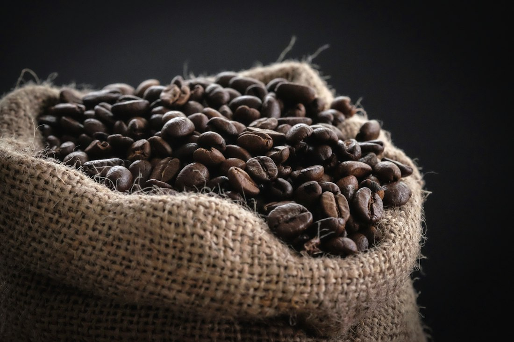
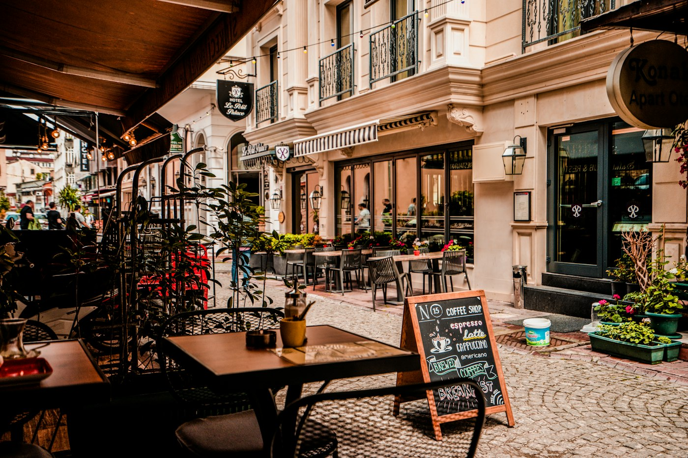

Our Story
More than coffee.
A neighbourhood room built around good coffee, slow mornings and the kind of afternoons that get away from you.


Since 2016
We started with one machine and a short menu.
Caffeine Cove opened on the corner of Harbour Lane with a second-hand espresso machine, a borrowed grinder and a very short list of things we thought we could do properly. The list is longer now — but the rule hasn't changed: if we can't make it well, we don't put it on the board.
We roast in small weekly batches, bake before the shutters go up, and cook the syrups ourselves. It takes longer. It's the only way we know how to make a cup worth sitting down for.
And it's the sitting down that matters most. The room was designed for it: deep seats, soft light, a long communal table for people who came in alone. Nobody minds if you stay for three hours with one flat white.
What we believe
Good coffee is a craft. A good cafe is a place to stay.
We buy from growers we can name, pay above market for the lots we love, and print the origin on the board so you know what you're drinking. Everything else — the bread, the pastries, the compotes — is made here, by people who will probably be the ones to serve it to you.

How we work
Small things, done properly
Roasted, not bought in
Weekly batches on a 6kg roaster two streets away, rested for five days before the bar sees them.
Baked before sunrise
Laminated pastry, sourdough and the cakes in the case all come out of our own kitchen each morning.
Made for the room
Seating that invites you to stay, staff who'll remember your order, and a table you can share.
Milestones
Ten years, one corner
We open on Harbour Lane with twelve seats and one espresso machine.
The kitchen comes online and breakfast becomes an all-day affair.
We start roasting our own house blend in small weekly batches.
The terrace opens, doubling the room for anyone who prefers the sun.
Same corner, same rule: if we can't make it well, it doesn't go on the board.
